Dublin, Lisbon, July 2008
13 July 2008
We flew from Gatwick to Dublin on Ryanair, one of those "never again"
experiences.
Getting to Gatwick was very straightforward. Despite closure of the
District Line, we got a Hammersmith & City train to Moorgate, a Northern
Line to London Bridge, very expeditiously. There was a long but fast-moving
ticket queue and we just caught the train half an hour before the one we
had aimed for.
Despite the fact that we were supposedly too early for check-in to open,
there was a very long slow-moving queue with just two people behind the
desks. Clearly they save money by employing few ground staff. When we finally
got to the head of the queue, we found another way they save money. Though it
is not clearly announced anywhere, passengers are only allowed one checked
bag which must weigh at most sixteen kilograms; they charge ten pounds per
kilo over this. The passenger ahead of us was looking at a 120 pound surcharge.
Moreover, you have to go somewhere else to pay it, and then come back to
collect your boarding pass.
We were not overweight, but you don't get a seat allocated on this airline,
so we will have to face the scrum again when boarding opens.
The airline horror story over, we were at the mercy of the airport. The
regular security check was apparently not working; we were directed up
the escalator to a tiny corner where there was an X-ray machine and a
desk with cameras to photograph all passengers. Then we had to enter the
departure lounge through a door marked "Emergency exit".
In the departure lounge, with plenty of time to spare, I had hoped to
get a new watch; but there were no watch shops, few shops at all, and a
huge crowd of passengers. Worse than Terminal 2 at Heathrow in the old
days. So instead we went to Pret à Manger for a sandwich, cake and
coffee. At least they produced good food, though the queues were again
terrible.
After eating I explored, finding a larger floor with more shops which we
should have come to if they hadn't sent us the wrong way. The flight
(Ryanair slogan, "The on time airline") was ate boarding, and there was quite
a scrum, but we were near the front and managed to get two seats together,
one by the window. Then they told us that there would be a 35-minute delay
because of congestion at Dublin. I strongly suspect that by their slowness
in boarding they missed their slot and had to wait for another. We had
to walk across the tarmac to the plane since they are too stingy to pay
for a gate, and on the plane there was an extremely irritating advertising
jingle playing non-stop. It kept referring us to the non-existent in-flight
magazine.
When we finally took off, the worst was over. There was some cloud cover
(level plains with occasional mounds erupting from them), but with breaks
which became more frequent, until by the time we crossed the Welsh coast
we had good views of Cardigan bay back to Pembroke. The sea was so calm that
clouds were reflected in the water.
We flew south of Dublin, then round the back and in to the airport. Some
delay: there was only one desk for non-EU passports, and an American girl
with a student visa took a long time to process, while an officer sat
reading the newspaper at a nearby desk. Finally the girl finished, and they
opened another desk, and I was through in no time. A short wait for
bags, then a bus waiting for us; it gave us a tour of the city centre and
dropped us right outside the hotel.
Unpacking, then a very welcome shower, before time to register and go to the
reception.
We were standing there with drinks, and Rosemary just said that there was
nobody she recognised, when all of a sudden people she or I knew kept turning
up: David Balding, a large contingent from Brazil, Chris and Margaret, Murray
Jorgensen, and many others. After some time and conversation we went to eat
with Chris and Margaret, at the Italian restaurant in Donnybrook, which
was good and not too expensive. I had roast cod, the others pasta. Then
tired, back to the hotel and bed.
14 July 2008
Up fairly early; the opening session was at 8:45. Cooked breakfast in the
hotel, then I accompanied Rosemary across to the campus. She went in and
I went looking for a shop. The student union shop was open, and sold me a
five-day bus pass; the bookshop opened at 9 and sold me ordnance survey
maps of Dublin and Wicklow.
While I was sitting on the edge of the lake waiting for the bookshop to
open, suddenly the peace was shattered by a couple of squabbling black-headed
gulls. Soon a woman with a bag of sliced white bread appeared, and the water
and air were filled with gulls fighting over pieces of bread. A couple of
ducks appeared. I didn't like their chances, but they made a good living by
picking up the crumbs that fell from the gulls' tugs-of-war. After a while
the gulls became sated, and more ducks appeared, and began to behave more
aggressively. A pair of swans with four cygnets showed up. Hardly nourishing
food for them, leaving aside the possibility of attracting rats.
Then to the bus stop, where Margaret was waiting, and Kathy soon turned up,
as arranged. We tried out our new bus passes on the bus into town. On the
way in, the man in front of us started telling us his story, introducing
himself as Anglo-Irish (after starting by saying that the Irish are a very
tribal people). His father had been Lord Mayor of Dublin in the early 60s,
and he showed us the mansion house. I asked if he had lived there then, but
no; the previous Lord Mayor had used the house as a house of ill-repute, and
as a result, nobody was allowed to sleep in the place! Then we came to
Trinity, and he explained how it had been a mortal sin for a Catholic to
attend Trinity, and recited a poem of his own composition about this.
But we had to leave him, as the bus turned to the west.
We walked to the Tara Street DART station, having a bit of trouble finding it.
The map showed it as in the middle of a block; we walked right round the
block and found the entrance when we had nearly completed the entire circuit.
So we bought tickets to Howth and went to the platform, with me having a
small panic on the way thinking I'd left my wallet behind.
|
A pleasant short journey took us to Howth, where we set off past the harbour
towards the cliff path. It was a spectacular walk, with views over the
harbour, to Ireland's Eye and the further island that was off my map,
out to sea, to the Wicklow mountains, and finally Dublin Bay and the port.
The wildflowers were spectacular, with the heather in full bloom and many
other yellow, white and blue flowers brightening the path. Kathy, a very keen
botanising gardener, was in her element, identifying them for us. In one place,
there had been a recent fire through the gorse bushes, but they were already
putting out bright green shoots from the base.
|
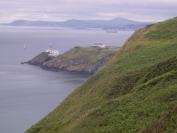
|
Far below we saw colonies of gulls, with some heavy dark birds
of upright shape among them. We argued about what these might be, even
wondering if they could have been penguins, when a man with serious binoculars
came along the path, and told us that they were razorbills or guillemots.
There were also some cormorants, some nesting on the top of a small island
rock. Nearer to us swallows swooped and there were some small brown birds.
|
We turned up the road to the lighthouse, crossed the main road, and by a
lucky chance found the path up through the bracken and brambles. A struggle
brought us out to a lovely heather-covered hilltop. But then Kathy discovered
that she had lost her sunglasses. She had tucked them into her belt on a
water stop just before we left the road. So she went back to look, and
luckily found them.
|
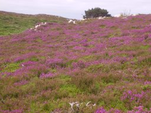
|
Over the top of the hill, with fine views in several directions, and we
ambled down through a very haphazard quarry to the road that took us back
to Howth. Coming down into the town we passed a decent-looking pub, and decided
to go in. We had a merry lunch, with some drink; the girls had chowder and
I took quesadillas. Then we ambled back to the harbour and along the front
to the station.
There were two trains waiting. We flopped into the nearer one, which wasn't
the first to leave, but we were not much delayed. We started taking a more
sensible route back to the bus stop, but at the end of O'Connell Bridge we
saw a number 46A, and ran down the street and tapped on its door. The driver
let us on, so I was back at the hotel by 16:15, in good time for a
leisurely shower before the next event in the programme.
This was the unveiling of a plaque to W. S. Gosset, the chemist, mathematician,
and chief brewer at Guinness, who (writing as "Student") devised the t
distribution. We walked to the campus car park from which conference coaches
went, and a little after seven the coach set off (stopping on the way to
pick up someone who was waiting in the wrong place). We drove to the Guinness
brewery store, an astonishingly huge building which was the hop store and
has been imaginatively converted into a Guinness-themed experience.
We were taken by glass elevator to the top floor, where there is a bar and
small restaurant, given a glass of perfectly-served Guinness, fed by waiters
coming round incessantly with trays of excellent food (unless you happened to
be vegetarian), and had the chance to look at the splendid views of Dublin
in the soft evening light or talk to various friends and colleagues. (The
affair was by invitation only.) Finally, when we really were well fed and
watered, back down in the lifts.
The place where the plaque has been installed was very noisy, so we had the
speeches in a slightly less noisy spot, where the 9000 year lease signed by
Arthur Guinness in the nineteenth century is on display under a glass panel
in the floor. Some speeches were more or less audible over the din of the
experience, but some speakers didn't really feel comfortable with the
microphone. Standing very near. I could more or less hear everything. Then
to the plaque itself, where two members of Gosset's family (one of whom had
met the man, when one was on his death bed and the other a six-month baby)
pulled the cord to show the plaque, and then there were various photo
sessions.
Finally a rumour came around that the coach was about to leave. Some caught it,
while others decided to make their own way home. Of those on the coach, some
decided to get off down town and make a long evening of it; we stayed on.
The coach made various detours to inaccessible hotels. I assumed it would
go to the place it had started from, but it sailed right past, and stopped
at a hotel further along. At this point the driver asked us where we were
staying, and turned the coach around in a narrow side street to take us back
to our hotel. And so to bed.
15 July 2008
|
John was at breakfast when we got there but Kathy wasn't. Rosemary went off
to an early session while I got ready in a leisurely way, then walked up to
the campus and looked at the garden of remembrance (a pleasant little circle
of bamboo and stones with a fountain) and the bust of James Joyce
before heading for the bus stop. The ducks and swans were still at the
feeding point but most of the gulls had already dispersed and the rest were
looking quite satisfied.
|
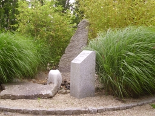
|
Kathy insisted that a number 10 bus would take us to the Botanic Gardens,
despite assurances from both our and Margaret's hotel desks that it was a
19 or 19A that we wanted. We caught a number 10 into town but she allowed
herself to be persuaded that we should change. The 19 came while we were
walking along the street and took us to very near the gardens. (The 19A
actually stops right outside.)
|
We went in, got maps (all of this free!), and started into the gardens as
the drizzle began, so we decided to do the palm house first. The main door
was closed, but signs pointed us to other entrances (shades of Tara Street
station yesterday). We went in a door with some fine carnivorous plants.
I took a picture, and turned around to find some even more astonishing
epiphytes. As I lined the camera up, the screen whited out and gave me
a pattern of moving lines. It seemed to be completely defunct. So
I had to look at things instead.
|
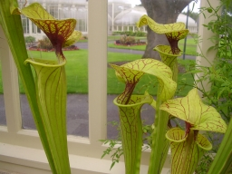
|
There was indeed plenty to see. We walked through that glasshouse, seeing
palms and bananas and a good collection of cacti (some in flower), then
went out into the open. The oaks and Chinese plants were closed, but there
was a nice organic vegetable garden enclosed by old stone and new brick walls.
Some lovely vegetables and herbs, including a golden version of silverbeet,
and an Australian weed of the Datura family in a section of the formal
box herb garden. Naturally, some very healthy looking potatoes!
Outside we came to an exhibition called "Hard Rain", although a sign at
the entrance told us that it was closed. It was an illustrated version of
the lyrics of the Bob Dylan song, and the reason it was closed was that
some of the posters were missing. We found later that a big tree had been
chopped down nearby; it looked as if it might have crashed through the line
of posters. Even without most of the second verse, it was a very powerful
exhibition. The song ran through my head as we walked along. Some of the
lines (like the young child beside the dead pony, a San bushman in a drought
in Namibia) were interpreted very literally, others (the six crooked highways,
a man carrying his cholera-struck wife in Bangladesh) more symbolic. The
white man walking the black dog was shockingly literal, taken inside
Abu Ghraib prison. One of the pictures is the famous Sebastião Salgado
picture of workers in the Serra Pelada goldmine.
We went round further, past waterlilies, pine trees, and another glasshouse
with plants of Gondwanaland, and then round the sunflower maze we'd seen
signs for (not very challenging, as the sunflowers were only thirty
centimetres high), and then adjourned for lunch. The lunch room was crowded,
but the staff were efficient, and we got pleasant salads and found an
empty table.
Then the fire alarm went off, clearly triggered by smoke in the kitchen. We
sat for a while, but it was quite intolerable, and eventually we went out,
leaving our half-finished meals and a coat and hat to mark our places.
Almost as soon as we got out, it started to rain, and then the alarm stopped,
so we went back in, just in time to see a waitress carrying our food away.
A shout brought her back, but she was quite surly. The cashier was more
reasonable, however, and gave us coffee on the house.
Over lunch, Kathy was telling us a story about a mobile phone, whose battery
developed a small fault. A new battery cost 60 euros, but a new phone was
90 euros with 40 euros worth of free calls. As she told it, something clicked
in her brain, and she decided to go back and photograph some of the Hard Rain
posters against a background of trees, and make a collage with a picture of
a mobile phone and battery, to show the consequences of out wasteful way of
living.
That done, we went back outside and caught a bus, which had just arrived at
the stop on the other side of the road and meant we had to hurry. In town
we separated, Kathy and Margaret to the museum of modern art, me to buy
a new camera (illustrating the point yet again).
It was quite a hunt before I found a camera shop, a Dixon's at the back of
a huge shopping arcade. I got another Olympus, so the controls are like
mine and the learning curve will not be so steep. It had better work; the
guarantee is only valid in Ireland. (The salesman didn't try too hard to
sell me the three-year extended guarantee.) On the way out of the shopping
arcade, I found a jeweller selling expensive watches, but she did have a
leather strap for my cheap Casio which she fitted for only twelve euros.
And so the bus back to the Montrose, and just time to put a bit of charge
into the battery of the new camera and try it out before the Fisher memorial
lecture and dinner. One great bonus: the old camera refused to talk to the
white toy, and I had to get an adaptor to plug in the card directly; but
the new one works with no problems at all.
I arrived in good time, which was just as well since the room was not
altogether easy to find. I found Rosemary and was able to calm her down
a bit by finding her a drink of water. The session began promptly, but
was shared with the handing out of various prizes, so it was nearly half
an hour before she actually got started.
|
It was a very good lecture. No surprise to me, having heard about the
material (and even given her access to GAP for the calculations), but the
audience was really impressed. There were several questions, and there was
some difficulty getting away since so many people pressed round to
congratulate her. One of the nice things about the lecture was that the
empirical conclusion from all the calculations could be expressed in a
simple recipe that anyone could understand.
|

|
Then to the coach point, where a fleet of taxis was assembled. Again, there
were so many people congratulating her that we only managed to get one of the
last taxis. In the taxi was a somewhat under-dressed American girl who had
a complicated technical question which Rosemary was understandably not
processing. When we arrived, this girl signed the chit for the taxi. We were
ushered upstairs and offered drinks; she took a glass of mineral water. (She
had earlier wondered whether she would be out of place, since she didn't
drink alcohol). It turned out that she thought she was on one of the
Conference excursions, a literary pub crawl, which had left earlier. So she
discreetly slipped away.
At dinner we were seated next to two of the grey eminences, Walter Bodmer
and Geoff Freeman, and their wives. We had a very good evening; the food was
not quick but was excellent, while the drink kept coming. Finally we got to
coffee at about 11, and by common consent the company rose, not even waiting
for the petits fours, and proceeded to the taxis back to the hotels. We
slept very soundly!
16 July 2008
Next morning, Rosemary was off early, to a historical session (which she
very much enjoyed). I had a leisurely start; I went up to the café for
another cup of coffee, bought a paper in the Student Union shop, and did the
hard sudoku while waiting for the excursion to start.
Our coach got the tour guide, who was not universally welcomed! They decided
to go via Dun Laoghaire, along busy twisting roads which the coach had some
difficulty navigating, instead of straight down the main road. I don't enjoy
coach travel in these conditions. Once we got out of Dublin, as always, things
looked up. We went down between the two Sugarloaves, past a narrow cleft in
the hillside, across the moors with flocks of sheep, and down a river valley,
to the carpark of the visitor centre at Glendalough. We (Rosemary, Chris,
Margaret and I) set off on one of the recommended trails, said to be 9km with
380m of ascent (but this didn't include 2km each way to get to the start of
the trail).
|
We started down the Green Road, a well-maintained track, past the famous round
tower and old church of the former monastic settlement, and past the lower
lake. We came to a crossroads near the end of the lake, where we made quite
a steep ascent past a very nice waterfall. At the top, there was a stern
notice warning us that we should have proper equipment including a compass
and navigational skills before attempting this trail. In the event, almost
the entire length of the trail over the hill (The Spink) on the south side
of the lake was consisted of large pieces of wood like oversized railway
sleepers laid side by side, across rock and bog, heather and bracken; there
was absolutely no chance of missing the trail, and the only navigational
skill required was the ability to distinguish the three colours of arrows
marking the trails!
|
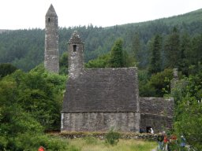
|
We began up a series where the wood had been made into steps, which ascended
quite far until coming out to a viewpoint over the two lakes which give
Glendalough its name. We stopped for lunch there, but soon discovered that
the area was thick with midges, so didn't stop for longer than we needed to!
Then the path continued along the top of the cliffs with views across the lake
in both directions, a final climb to the top of the Spink, and then a descent
which would have been quite unpleasant without the wooden sleepers, across a
large extent of bog.
|
Then down a path of stones laid into the soil to a footbridge over the river,
from where we followed the river down past many beautiful cascades, rapids,
pools, and stunted trees, to the old lead mine and miners' settlement. From
then on we were on the well-made minders' road through scots pine and bracken,
back to the end of the upper lake where we could cross back over to the green
road and back to the coach, arriving ten minutes before the advertised
departure time.
|
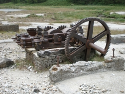
|
The heather flowers were making an excellent show, and there were a few
bilberries just about ripe on the bushes on top of the hill. On the way
down there were bog plants including bog asphodel. Down the rocky river
path we saw many wildflowers including candytuft and a white-flowering
saxifrage. Rosemary, with a group of others, saw fallow deer, and some people
reported seeing feral goats and a peregrine.
Coming back we took a more direct route. The tour guide tried to get us to
sing, without much success, and most of the trip was peaceful. The bus did
hotel drop-offs. We got off with Chris and Margaret and went looking for a
pub marked on the map, getting directions from the tour guide first. We
were rather led astray. We walked almost past the pub, which had changed its
name from the Deer Inn to the Mount Merrion Business Centre(!), and then
across a rather large park, before realising that we needed to ask for
directions. A bemused local pointed us back the way we came, and we eventually
found it.
We had a pleasant evening, with standard pub fare and good beer. When we had
almost finished, the fire alarm went off. If we had been made to evacuate,
I would have taken my food and drink with me after yesterday's experience.
But nobody moved, and the noise soon stopped.
The map showed a fairly short route back to the Montrose, along a path through
the UCD campus, which we took; everything worked fine, and we were soon
tucked up and asleep.
17 July 2008
Again Rosemary was off early; she is talking in the microarray session. I
met Kathy in the lobby at 9:30, we picked up Margaret at her hotel, and
headed off towards Blessington, which was on a lake with hills all around
and a plentiful supply of holy wells, megalithic tombs, standing stones,
etc. I had identified a likely-looking place for a walk.
We had a coffee in the town's only coffee shop (though it was plentifully
supplied with pubs), which produced attractive-looking bread and delicious
fruit scones. Then we found a big sign for the tourist office. The office
itself was more elusive, tucked round the corner at the end of a row of
shops accessible by a slightly rickety staircase.
|
The woman in the shop seemed appalled that we were prepared to walk, but
when we persisted she offered us the Glendalough leaflet that we had used
yesterday. There was another leaflet, for a walk round Hollywood (St Kevin's
old stamping ground, with his bed and chair marked on the map). So we
changed our plans and headed down the road to Hollywood.
Out of town, past the protestant church, up a grassy crag to where St Kevin
stood on a crag. A true Irish miracle: the statue had been erected in 1914,
and the leaflet described it as "headless", but it was entirely intact with
no sign of a join! Soon after, we came to a closed gate with a notice saying
"Danger: no entry", and although we persevered for a while we were forced
to turn back. We discovered that the map had been produced in 1991.
|
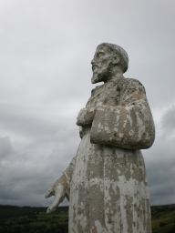
|
Undaunted, we went out by the way we were supposed to come back, and did the
rest of the circuit mostly without difficulty. There was a narrow winding road
along the skirt of the mountain, with lots of gorse, foxgloves, and brambles.
Then we passed some houses and farms. At one farm, two little dogs came and
tried their best to see us off. Inside the farmyard a peacock was preening
itself in a mirror. The stream had a wooden pallet on the bank; we managed
to use it as a makeshift bridge, but I had to get my feet a bit wet putting
it back on the bank. Then there was a nice stretch through pine forest.
The map offered us a short detour to a stone circle, the Piper's Stones,
down a lane to a house. But the builders working at the house denied all
knowledge of it, and claimed that we should try to get to it from the main
road. We declined, and went on our way.
|
Back in Hollywood, we went to the Hollywood Inn, where we had a pleasant lunch
of leek and potato soup (in my case) and toasted sandwiches, and a nice
pint of Smithwick's (or half of cider, or fizzy mineral water) before hitting
the road for home. The village had two pubs on either side of a wide road
leading nowhere; I supposed that they had been coaching inns and that this
had once been the main road.
An easy journey home (most of the traffic was going out of Dublin), back to
the hotel about four, with plenty of time to prepare for dinner.
|
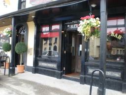
|
On the way out to dinner we met John Hinde, who said that it began at 7:30,
not 7 as it said in the programme. Indeed, the tickets did say 7:30, but we
ambled over anyway, and inevitably found quite a few people there. They opened
the front door and we went into the foyer, and though the staff kept telling
us that we were too early, nobody went away. After a while they bowed to the
inevitable and brought some drinks, and finally let us through into the
conservatory.
Eventually the doors to the dining hall were opened and the event began. It
was a so-so meal -- the steak was very tough -- but the wine flowed and the
company was good, and the Irish singing group who entertained us did some
remarkable things (slightly detracted from by people behind us who kept
talking in a low voice). One particular piece, with English words and an
Irish melody, sung in Hebridean style called "not singing together", was
quite astonishingly beautiful and controlled.
And so home, rather late.
18 July 2008
So getting up for breakfast was a bit of a struggle. Rosemary had an 8:30
start again; I read a bit before venturing forth. The relentlessly grey
skies continue, and there was quite a heavy shower at breakfast time.
I made it down to the hotel lobby, where I wrote my Lisbon talk and edited
a few files. The morning passed relatively slowly, and it was nearly 1:30
that Rosemary got back, the closing ceremony having been rather long. The
white toy was playing up; every time I started a program or opened a
terminal window, I got a bizarre error message about inter-process
communication, whose only practical effect appeared to be that the double
quote and at sign had changed places on the keyboard. This may be caused
by my having used GIMP, which complained about not enough memory; it may
have overwritten some crucial file somewhere.
We took the bus into town. It was already packed when it arrived, and the
young people upstairs were very noisy. Eventually the driver decided that
the bus was full and sailed past bus stops with big queues of people
frantically signalling to him. Eventually we reached town, and had soup
and salad in a small bistro.
We went to Tara Street station to catch the DART to Malahide. There was again
some delay, since two trains to Howth and one to Maynooth (and one which
didn't stop) came before ours. When the train came, it went rather slowly.
So it was well after 4 by the time we got to Malahide.
|
We walked into the Demesne (a helpful man who had been on the train pointed
out the best way) and found our way to the Talbot botanic gardens. We paid to
go in, although by then we had only 35 minutes until the gardens closed. They
were well worthwhile, with some quite astonishing flowers; I went slightly
berserk with the new camera and took lots of close-ups. We wandered around
the whole thing, and had time to linger at the most interesting specimens
and even to sit on a seat for a few minutes at the end before the caretaker
came to eject us at 5.
|
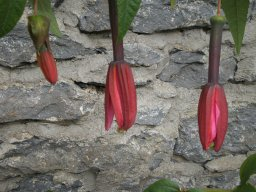
|
|
Then we wandered gently around the demesne, through nice stands of trees,
looking at the well and the ruined lime kiln and doing a few of the
exercises on the fitness trail. We left the demesne by a gate on the north
side and found a lane that took us down to the water. Not a very exciting
bit of shore, but a nice view of the railway crossing the water. Then through
a tunnel to the Malahide seafront, where we strolled past the yachts and
checked out the restaurants, opting eventually for the Orangerie, a
Cajun/Californian restaurant.
I had Brie in crumbs followed by Cajun chicken, both extremely flavourful and
very nicely presented. We managed a glass of rosé each, no more
being necessary after last night. Finally, we went back to the station and
caught train and bus back to the Montrose. The midge bites were itching so
we applied tea tree cream and then slept very well.
|
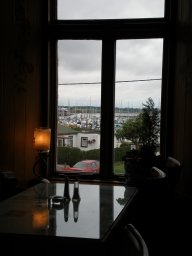
|
19 July 2008
Quite tired in the morning; up at the usual time for breakfast since we had
to catch the airport bus at 9. Checkout was quick, the bus came soon after
we arrived at the stop, and though the trip through the city was a bit
stop-start, we were at the airport in good time. The check-in queue was
blessedly short. But the airport security was a shambles. The sensitivity of
the metal detector was set far too high; everyone set it off. (The only metal
on me was the eyelets on my shoes, but they set off the beeper, and I was
hauled over for a body search. It was perfunctory, the man doing it looking
rather stressed, and he didn't even notice my shoes. Then I found that they
had taken my belt, and I had to ask them for it. Later I found that they had
disconnected the SD chip from the white toy. It could so easily
have become lost. I had a horrific vision of losing all my talks, pictures,
diaries, etc.
Finally we were through, into a departure lounge looking more like a souk.
The departing passengers were crammed into a narrow passageway between rows
of identical shops. Fortunately we spotted a sign to a food court; this was
less crowded, and had nice fresh salmon and salad and huge quantities of
watermelon and pineapple quite cheaply. So we were able to relax a bit until
the departure gate opened.
Not surprisingly, there was some delay at the gate, and some confusion --
a flight to Rome was leaving through the same gate and about the same time
as ours. Finally we got on to the plane; we got two seats together, and I
had the window seat. The views were stunning. Some cloud, but enough gaps
to see what was beneath. The water in the Irish Sea was patterned by currents
and cloud shadows. Then not much to see until I was Chesil Beach and Portland
Bill out the (right-hand) window. We flew out to sea, and just caught a
glimpse of the southernmost tip of the Isle of Wight, but returned to the
coast at Selsey Bill and flew down to Brighton before turning inland.
Turning to land at Gatwick we could see the North Downs rising before us
and London beyond, with the Dome and Wembley Stadium both easily recognisable.
A small surprise at immigration. After I had made a long detour following
signs for non-EU passports, I came back to the same place as everyone else,
and was told that Dublin passengers should join a different queue, and
should have their boarding passes ready. Fortunately I hadn't thrown mine
away; a woman collected them and we were through, no passport inspection
required. The bags came quickly and we were soon home.
A quick trip to the Co-Op stocked us up on the essentials for dinner and
breakfast; in particular, offsetting the extraordinary lack of fresh fruit
and vegetables in Ireland.
I had a go at fixing the problem on the white toy, and ended up
fixing it so that it wouldn't boot. After a little thought, it seemed to me
that this problem would just recur, since I had not enough memory left after
installing various software; so I reset it to the factory settings. All the
files were safe, since I had them on the SD card and had also backed them
up to a USB stick. Then I went into the office and, after reading a lot of
email and dealing with a small bit of it, I looked up on the web a couple of
useful hacks that I had before (to get a reasonable-sized terminal window,
and to ignore a USB device or SD card on booting up) and put them in.
Home to supper, bath and bed.
20 July 2008
So much more relaxing to sleep in my own bed!
After breakfast I went back to the salt mines to deal with a couple of
urgent emails. Then back home, stopping off at the Co-Op to get a bit more
food for lunch -- tomatoes, a pepper, and some salami. We made a good lunch
of this with the rest of the bread, cheese and fruit, after a rather hurried
packing in which I forgot my hat!
I took Rosemary to Kings Cross and put her on the train to Cambridge, then
caught the Piccadilly Line to Heathrow. The platforms and trains at Kings
Cross were terribly crowded, but by going to the end away from the entrance
I was able to find a seat to myself, and to have a good choice of seats when
the train came in.
Having plenty of time, I decided to
have a look at the new Terminal 5. It is quite a nice building, but looking
a bit unfinished in some places, held together with string and tape. But it
is cool (presumably at great cost in energy), uncrowded, and clean. I walked
up the stairs from arrivals to departures, with dramatic views over the
tree-studded courtyard, the car park with a couple having a quick snog on
the roof, the curving elevated road and the view beyond to the reservoirs,
fields and hills. Then I read for a while in the cool before heading back
to the hurly-burly of Terminal 2.
One quibble: the noise level on the new track to Terminal 5 is unbearably
high.
I bought a guide to Lisbon and headed back to the underground.
On entering Terminal 2, I at once saw why Terminal 5 is so much more
pleasant: the high ceilings. It felt very oppressive. I was too early to
check in, so went and sat in the departure lounge for a little while.
This was a mistake: when I came back downstairs, there was a very long and
almost immobile queue, served by a single desk. After a while, two adjacent
desks gave intermittent help, and after 25 minutes I was checked in, and
another ten minutes got me to the departure lounge.
Just about the time we should have been called to the gate, the screens
announced a delay of more than two hours. I decided it best to have something
to eat, so went to Wetherspoons for dinner. I also decided that the delay
would mean I'd be likely to run out of reading matter, so I went to Smiths
and bought a book.
Finally we were called, boarded, and set off. The plane sat for a long
time on the tarmac, where a lovely sunset was colouring a cloud in the east,
out of which the lights of planes appeared at regular intervals to run
down the flight path. We finally took off nearly three hours late. But
the flight was stunning. The sun was setting, and as we rose through the
clouds their towers (and the wings of the plane as it banked) were lit with
a bright orange light. We came to the coast, with good views of Hayling
Island and Portsmouth with its giant sail, and an absolutely stunning
view of the entire Isle of Wight -- hard to think that it took more than
four days to walk round it, but everything was clear, the hilly backbone,
the rivers, the Needles, even the coloured sands of Alum Bay. Out over
the Channel, with views of the Channel Islands and Normandy, and a remarkable
red-orange band between two different shades of blue-grey in the sky.
Darkness came, they fed us, and finally we were over Lisbon. We flew out over
the Tagus estuary and turned back, with fine views of many magnificent
buildings in the town, and then some rather ugly buildings, all illuminated
by a moon just past full that had risen in the sky.
Off the plane, I saved a bit of time by having a non-EU passport, and so
avoiding the queue; but the baggage was absurdly slow in coming, so it didn't
make the slightest bit of difference in the end. Finally all was done, and I
came out the gate to an enormous crowd of people, with João among them.
He took me on a quick night-time tour of Lisbon, including some of the
buildings I had seen from the plane, and filled me in with some history.
It was nearly 1 when I finally got to the hotel.
21 July 2008
I woke in time for a bath and breakfast before João came to collect me.
Unlike Dublin, there is fresh fruit, cold sausage and cheese, and even
the hot breakfast is quite light, with nothing fried.
We arrived at the conference venue and got a bag with programme etc. I also
met Christopher Minder from Switzerland, who is talking on using designs
in eliciting expert opinions in clinical diagnosis; someone had told him
that Hadamard matrices would help him, so he had googled, and found my
article in the Encyclopaedia of Design Theory; he regards me as the expert
on this topic.
The workshop is in the Communication Museum. It began with a formal opening
ceremony, and then a eulogy for Professor Calinski (whose eightieth birthday
we are celebrating) by a colleague and former student of his. Then he gave
a lecture, using PowerPoint, but with an assistant to click to the next
slide; it was marred a bit by the fact that he mostly just read out the
content of each slide, and even showed us the place with a laser pointer
so we could follow more easily.
I must admit that I drifted off into thinking about expansive permutation
groups (or whatever our current term for them is). I was able to show that
the general linear group acting on subspaces of fixed dimension, and any
classical group, is non-expansive in every case where it is not 2-transitive.
After lunch, in a similar talk, I did the same for the symmetric group acting
on subsets of fixed size. I found later from João that Peter Neumann had
already done this last week and circulated an email about it.
After the coffee break João took me to his institute, where I will have a
shared office this week. I got the office key, and will get a computer
account later. We also talked to Csaba, and went for lunch in the canteen,
where we had a dish from "the other side of the river", consisting of meat
and mussels (so the Portuguese invented surf'n'turf before the North
Americans!).
|
Outside the institute there are some splendid oleanders in full flower,
and also palm trees, a loquat, and other sub-tropical vegetation. The
sun poured down, and the jets coming in to land thundered overhead. (João
says this is the only inner-city major airport in a European capital. Two
plans to build one out of town have been blocked, in the first case on
environmental grounds since it would have involved moving a mountain and
blocking two rivers, and in the other it would be 50km from the city.)
|
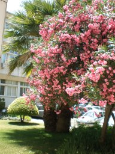
|
In the afternoon break we also skipped out and went back to the institute,
where I got a computer account, caught up on some of the synchronizing
email, and then walked the short distance back to the hotel.
João came to pick me up and take me to dinner. We went by yet a different
way through this beguiling city, over two hills, through narrow streets in the
old Moorish quarter which had not been destroyed by the 1755 earthquake, past
the castle and the cathedral. At one point the cityscape opened out to give a
fine view of old houses further along and the broad Tagus beyond. The
extraordinary Lisbon light illuminated houses of the characteristic Lisbon
yellow. I do want to find my way back there on foot at some point!
|
Arriving in a small square, we parked the car and walked the short distance
to the restaurant Luso, in a side street. We were the first there, so waited
outside for the rest of the party. Eventually we were ushered in and sat at
a long table near the stage. I was with João and Csaba, with Theresa
next, and Basia's supervisor Stanislaw Mejzaa beyond her.
The dinner was plain but tasty: thick vegetable soup, fish with prawns, and
a delicious caramel-flavoured dessert. While we ate, the entertainers
performed on the stage. Two groups alternated: the folk dancers (who each
time wore different costumes and performed dances from different parts of
the country, once the north, once the village from which the bullfighters
come, etc.), with castanets or tap shoes, accompanied by accordion and drum;
and the fado group (four different singers accompanied by a Portuguese guitar,
regular guitar playing chords, and bass).
|
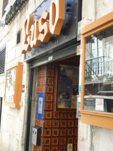
|
The Portuguese guitar is a kind of overgrown mandolin with twelve strings in
six pairs, and the player was excellent, using it very effectively to
support the singer, and doing very impressive solos as well.
Finally the owner of the restaurant came on and sang a few songs, during the
last one duetting with one of the other singers standing in the audience. I
thought this would be all, but the dancers came on and involved some picked
members of the audience in a dance for the sardine festival, and then all
the entertainers came out and took a bow.
That was it, and João drove me back to the hotel.
22 July 2008
I could sleep in rather later this morning since we had agreed to meet in
the Institute; I took a shower, had breakfast, and then typed up the proofs
of the non-expansive results I proved yesterday, before walking the relatively
short distance to the Institute.
The computer in my office was no longer working, but João allowed me to
use one in his office. On the Windows machine there were at least two different
ssh programs but no scp. One of the ssh windows
allowed "copy and paste" (though the other didn't), so I opened the file
locally, copied it, and pasted it into a file in London, which I then
compiled and circulated to the mailing list (not even proof-read!!)
Then off for more sightseeing -- João drove out to a beach west of the
city, just about at the point where river becomes sea. On the way, we had an
adventure. João stopped for petrol at a service station. (The car, I
should say, is a hired car, since his sister has borrowed his big car and some
of his children for a holiday!) When he came to put the petrol in, he found a
metal cylinder blocking the fuel tank inlet, and nothing would go in. He
asked the service station attendant, and a man in a similar make of car who
had just pulled up, and telephoned the hire car company, all to no avail.
Meanwhile, I took a look myself, stuck in a finger, got my nail under the
metal disc, and lifted it up. Then it was a simple matter to hold it up
with a biro and slide the nozzle in underneath.
When we got to our destination, it was a bit difficult getting to the beach;
all the roads seemed to turn the wrong way, and we drove around a shopping
centre, a housing estate, and a riverside park with some splendid eucalypts
(twice) before finding a road which led along the beach. Rather than stop
and paddle, we had to head back to the conference along a riverside road,
and were just in time for the first invited talk.
The third talk of the morning was about the connection between Jordan algebras
and statistics, specifically their role in best linear or quadratic unbiased
estimators; interesting stuff (essentially a coordinate-free approach) but
I didn't get everything out of the talk that I could have; I might have to
look it up later.
For lunch we had the Portuguese speciality, bacalhau (salt cod),
which João had told me about: he says that his German brother-in-law
cannot stand the dish, but I found it to be delicious, and went back for second
helpings. Afterwards there was fresh fruit: mangoes, pawpaws, kiwifruit, etc.
All very good.
I was second speaker after lunch, with Csaba following me and João
chairing the session. Before the talks, Csaba and I looked at one another's
slides to see whether our talks needed to be modified, and decided that
basically a little repetition was probably a good thing. The first talk was
interesting stuff about how a change in the model has given new hope to the
Gates Foundation's campaign to eradicate malaria.
My talk was a bit off-topic for most of the audience but seemed to go down
well anyway. There was no board of any kind, but four bottles of mineral
water stood on the table where the important people at the opening ceremony
had sat, so on the spur of the moment I used them to explain the wreath
product: the independent Brownian motions of the molecules in the bottles
comprise the base group, while the top group involves moving the bottles
around. The same metaphor explained synchronization quite well.
After the talk I was presented with a goody-bag of gifts: a pen, some
blue and white Portuguese crocks, and a couple of coffee-table books.
A very sweet gesture; I tried out the pen by writing "Thank you!!" to
Theresa.
Over tea there was a poster session; one of the posters, I was amused to
see, used the "Franklin--Bailey algorithm" to find fractional factorial
designs. There were then three contributed talks; the first two relatively
standard applications talks, the third one about updating web pages which
horrified me (he proposes making them synchronous so that you can chat,
with voice synthesis, in real time -- I can think of few things worse!).
So there was a short closing ceremony and it was over. João of course
suggested a drive. We went out to the large artificial forest on the hills
west of the town. At one point, we broke with tradition and got out of the car
for a short walk to a viewpoint with nice views over the city and the
suspension bridge. Since I seemed to survive this OK, João took me to a
restaurant with a landscaped pool and garden, and then to a part of the forest
with an amphitheatre and exercise trails, and we did some more walking.
|
From the last point, we could see the suspension bridge, and João
suggested that we cross it, since the rush hour traffic seemed to have abated
somewhat. So we did, and on the other side we drove through the suburb of
Almada, full of dodgy-looking high-rise buildings (João says they cost a
quarter the price of houses on the other side) to the Santuário do
Cristo Rei, with a version of the giant Brazilian Christ figure on top of a
column.
|
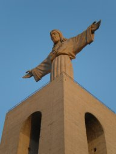
|
Here we had an extraordinary adventure, an example of the law of conservation
of luck. We found the gates locked, which João says must have been a
recent change since he had never seen that before. There was another man
trying to get in. João addressed him in Portuguese; he answered in English
with a Dutch accent. He had lost his money bag, and thinks that he left it
in the restaurant in the park. He was quite perturbed to find that he
couldn't get in. João found a call button and pressed it. Eventually
a man carrying what looked like
leads for very fierce dogs came over. We explained the problem to him.
He went away and looked, with someone else helping him, and eventually came
back and told the man that they had not found it, and that he should come
back at 9 o'clock the next morning to see whether the management found it
and put it in a safe place. So he went away disappointed and caught a bus
which had just arrived. Meanwhile, João engaged the man in conversation.
I don't know what he told him about me; I suspect something along the lines
of "This world-famous scientist has come all the way from Australia ..."
Anyway, the man said that the overseer was away and he couldn't really let
us in without permission, but he would give us a ten-minute guided tour!
|
As we walked in, there was the most astonishing sunset, with the sun behind
a cloud over Sintra and shooting out rays in all directions. The last rays
were illuminating the giant Christ, and on the other side of the river
the slightly hazy old city lay. On the way out, we passed two very fierce
dogs (no doubt the occupants of the leashes the man still carried), an
Alsatian and a Portuguese sheepdog, which barked loudly at us, especially the
Portuguese.
|
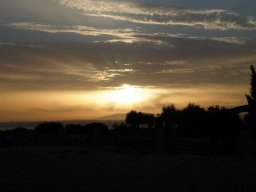
|
Back to the car, and back over the bridge, the sunset now even more amazing
in rich shades of orange, but no chance to stop for a photo! So back to the
hotel for the night.
23 July 2008
Another leisurely start; this time, nowhere special to go. I walked in to
the department. João wasn't there, Csaba was busy, and the computer was
still not working, so I went and started writing some notes updating the
synchronizing paper on the white toy. After a while João
came by to collect me for the bureaucratic business, i.e. signing some
forms, collecting the cheque, and taking it to the bank. We talked a bit
about Pablo's G2(2) example, and Csaba checked that the
stabiliser of the 21-set is PSL(3,2):2. I decided that it must have something
to do with the embedded thin hexagon, and soon realised that it couldn't
just be the point set. But on the way to the bank I understood what is
happening: each of the 21 points of the sub-hexagon lies on three lines,
two of which are in the sub-hexagon, so the third meets it in just one
point; these 21 lines, together with the three lines through a point,
demonstrate that the group acting on lines of the hexagon is non-separating.
(The spread of lines, together with the 21 points of the sub-hexagon,
demonstrate that the action on points is non-synchronizing.)
In the meantime, Csaba had brought a very long network cable, and I was
able to connect to the network; no login required, everything worked
absolutely flawlessly (both Web browser and ssh). So I was able to
ship both the synchronizing notes and the notes on Pablo's example to
London, compile them, and circulate them; and I also corrected the proofs
of my paper for the Hilton volume of Discrete Mathematics.
João came. I gave him a Kantor reference and we went to lunch. I had
some very tasty fish. After lunch, Csaba came to coffee, as did Gracinda,
the director
of the Institute; we had a long and friendly chat before she went off to
do some bureaucracy, Csaba to sort out a problem (his bicycle was stolen
last night from the balcony of his apartment, and he is worried because the
door from the kitchen onto the balcony cannot be locked). I worked a little
longer before setting off to walk into town.
|
It was hotter than of late, the sky cloudless and the sun strong; I missed
my hat. But it was a stunning walk, which I tried to record with far too
many photos. I headed towards town, crossing the railway line and coming to
the back of the Calouste Gulbenkian Gallery, set in superb gardens. Finding
a gate at last, I went in, and walked round to the front. I had had half a
mind to head for the Edward VII Gardens, but the roads thought otherwise,
and I found myself passing the Pombal statue and down the Avenida da
Liberdade, the busy street running between cobbled walkways with many
lovely trees.
|

|
|
At the bottom, I went up some very steep steps, aiming for the castle. I
found myself skirting a hospital, with the castle on the next hill over,
so there was another downhill and then up some more steep steps and narrow
streets. Eventually I found my way to the castle entrance. Deciding not to pay
to go in, I walked round the walls, with glimpses of the Tagus down the
side streets. I went down one of these streets, and came to one of the places
João had taken me, where we saw the "Lisbon light" on the houses further
down. There was a church with a little yard containing some brilliant
bougainvillea and a blue painting on ceramic.
|
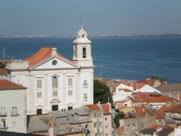
|
The smells in the first part of the walk were quite extraordinary. Fried
fish, drains, and at one point a mixture of chocolate and petrol fumes; and
something else that seems quite characteristic but I failed to identify.
Down from the castle I came to the Praça do Comércia, a huge
square with an elaborate statue in the middle and Lisbon yellow government
buildings round the outside. I kept on west, not on the busy road but a
bit in, and after a while turned up the hill.
By this time I was a bit tired and dehydrated, so I stopped in a café
for coffee and cake and a bottle of water. It was getting cooler, and I set
out again much refreshed.
Further up I recognised a church, which according to João contains a
large amount of Brazilian gold. He told me this on the night of the
conference dinner, so I turned down the side street and there was the
restaurant. Back to the road, a short distance brought me to a little park
with a stunning view, looking across the valley to the castle.
|
I continued along the street, aiming for the aqueduct, with some vague hope
that it might be possible to walk across it. After a while I came to what
seemed to be a detached piece of the aqueduct, the arches leading into a
pleasant small park. In one of the aqueduct supports was a small Fatima
chapel, and on the others were blue and white ceramic pictures.
Finally, after being barked at by some very large dogs in very small front
gardens, I came to the aqueduct -- and of course there was no way across:
there were footways on either side, but the whole thing was behind securely
locked gates and barbed wire. So I looked at it from both sides, and set
out for home.
|
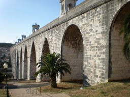
|
The map showed a fairly direct road, but it turned out to be a busy
expressway. So I headed along a different road. On the way I passed a
small but pleasant-looking café and decided that I might as well
eat there as anywhere. The solitary but good-natured waiter brought me
a little dish of beans and peanuts in their shells, and two bread rolls,
with my beer while they cooked my dinner. The television was showing an
ice-hockey match between Portugal and Switzerland, which Portugal won.
I finished the meal with a coffee and set off.
By this time the sun was getting low. It was by no means as spectacular a
sunset as yesterday, with no clouds in the sky; but the light, striking
down streets from the west, was a delight. I eventually came back to the
back of the Gulbenkian Gallery, and retraced my steps back to the hotel.
I was fairly tired and very thirsty, so drank several glasses of water and
had a relaxing bath before bedtime.
24 July 2008
I came in to work early enough to read my email before the 10am meeting we'd
scheduled to discuss the proposed "brainstorming" session. I checked the
spam file and found an invitation to a conference on geometric and asymptotic
group theory -- the spam filter had probably caught it because over 90%
of the message consisted of email addresses. I don't think I shall go to it
but I put it on the conference list, and moved the July conferences to the
archive. Then I looked at the Astronomy Picture of the Day and the BBC news.
When Csaba and João arrived, we spent over an hour brainstorming about
the proposed small conference or "brainstorming meeting" next summer. We
decided on tentative dates (after the BCC, and after a big semigroups
conference in Porto where several interested people will be), list of invitees,
and which of us will do which jobs. I got on with writing some of the
documentation before lunch (the 50-70 word abstract), and in the afternoon
made a start on the scientific summary and my CV and five relevant papers.
Csaba continued with PSL(2,13).
At 5pm I decided to stop for the day, returned my key and the network cable
for the white toy to Csaba, and came back to the hotel for a shower.
João said he would collect me at 8. I waited downstairs where the
chairs are more comfortable. In fact he came at 8:30; as he said, nothing
went wrong, otherwise it would have been much later.
We drove to his house, where Csaba with his lady and two small children,
and Gracinda and her husband, had already arrived, and also João's
wife and (I am afraid to say) an indeterminate number of children, two of
whom helped entertain us before dinner.
We had a very fine dinner: bacalhau in a potato pie with tomato and
olive salad; then meat, rice, and tomato, kiwifruit and mango salad;
and finally an amazing chocolate concoction and a strawberry and pineapple
cake. We talked a lot about how Bologna affects us (most continental
Europeans blame it on the British; and are just a little surprised when I say
how little attention we pay to it), students' attitudes, and in general the
sort of things that academics make conversation about when they are avoiding
talking shop. After dinner Gracinda's husband drove me back to the hotel.
25 July 2008
In the morning I was awoken before six by a lot of noise in the street below.
(I had left the window open, preferring fresh air to the rather inefficient
air conditioning.) Looking out of the window, I was surprised to see that
it had rained in the night, and the day had brought low cloud and drizzle.
(João said that Lisbon was weeping that I was leaving; more likely,
I think, that it was re-acclimatising me for British weather, for which
the forecast is not promising.)
I had an early breakfast, packed, and was downstairs at 8. I had told
João that I'd like to be at the airport by 8:30; he had jokingly said
he would arrive at 8:28, and in fact he was held up and arrived exactly at
that time. But it is only a ten-minute drive to the airport, we were going
in the opposite direction to the rush-hour traffic, so I was there an hour
and a half before departure. João pressed on me a parting gift of the
delicious Lisbon custard tarts, and suggested that Neill should develop a
twenty-first century Popeye who gets strength from these cakes.
The first steps were very easy: check in was very fast (they didn't even
ask me whether anyone had given me anything), and security likewise. You
never can tell where the bottlenecks will be, though. It took me fifteen
minutes to get through passport control, even though EU passports had a
separate area. All they did was ask me if I was going to Dublin and then
stamp my passport. There were several further long waits: after the gate,
in the ramp (open to airport fumes) waiting for a bus; on the bus, waiting
for a driver, and again, waiting for aircraft cabin crew. We finally left
about half an hour late.
With the change in the weather, the direction of take-off was reversed, so
we flew over my hotel (though I didn't see it, as I was on the wrong side).
Occasional glimpses of the Tagus, then solid cloud until northern Spain,
where there were a few breaks. It was cloudy over England and France, but
the Channel was mostly clear, and again I had fine views of the Channel
Islands.
Approaching Heathrow, the clouds conjured up a marvellous landscape. Beyond
a line of sandhills stretched a blue tropical ocean, with a wave rolling
in to the shore, an island, and hills on the other side of the bay with two
shiny white hotels built on them. Then we turned and descended into the clouds,
and never reached this ideal land; when we emerged we were over the south
London tower blocks, with the Dome (or the oh-two, as we are supposed to
call it now) in the background.
Only a little late at Heathrow, such is the wonder of timetables, and a fairly
quick trip through the airport to the underground, where a train came almost
immediately. London was hot and humid; broom and buddleia were blooming along
the Piccadilly Line. Quite soon I was home.
I walked to Whitechapel, took the photos in for printing, and collected the
parcel from the sorting office. Then I went home, had a cup of tea, and did
a load of laundry. I packed for Cambridge, and walked back to Whitechapel
to collect the photos. Then (why not?) I walked up to the canal and along it
to Kings Cross.
The station was terribly crowded and I had to queue for quite a long time for
a ticket. Then the Cambridge train was standing room only, so I had a bite
to eat and caught the slow train. It was crowded at first, but fairly soon
the crowd thinned out and it became more or less pleasant, which the fast
train would not have been at any stage.
In Cambridge, the sun was about to set, and the evening was very pleasant.
Parker's Piece was full of people, mostly just sitting talking but a few
playing football. Town was full of people going to pubs and clubs. I got
to Storey's Way but had a bit of trouble finding Benian's Court, which
is off another street called The Crescent with a sign suggesting that it
belongs to St John's. Also, the main block starts at number 7. But I found
the place eventually.
26 July 2008
After a very leisurely start we set out to have a gentle stroll to
Grantchester and back. We stopped in the Newton Institute on the way and
saw a lot of statisticians and mathematicians: Dave Woods, Basia and Anthony,
Ilya. On the path to Grantchester we met a Flemish couple and their small
child, here for the meeting.
We went into the first pub in Grantchester, expecting that it would be full
and we might have to move on. But it was surprisingly empty for a fine and
hot (though humid) Saturday afternoon, so we ordered food and drink and went
into the garden. There were Chris and Margaret already installed at a table,
so we joined them.
Over lunch we discussed possible walks, and I suggested the walk to Barton
and across the rifle range to Coton. They accepted, and then Rosemary decided
that she was up for it too, so after we had finished we all set out on the
walk.
It was a very warm and humid day, mostly sunny. There were wildflowers in
abundance. At one point I saw more scarlet pimpernel than I ever saw in
one place before, all wide open (which is supposed to be a sign of good
weather). There were also blue flowers (scabious, and the one that grows on
tall stems), white flowers (daisies, mayweed), purple flowers (bugle, mallow),
and masses of yellow flowers (ragwort, the umbellifer that isn't fennel,
etc.)
The rifle range is deserted and we carried on, and followed a path through
the Coton conservation area which avoided a bit of road, and up to the
village recreation area. By common consent, we turned left and had a couple
of pints in the pub before heading home.
27 July 2008
We walked out to have Sunday lunch with Robin and Catherine. Setting off
through the suburban streets of Cambridge was fine, but when we came to the
point where we had to cross the disused railway line and go under the bypass
(according to the map), we found that the railway was being converted into a
guided bus route, with no access, and the land beyond was being turned into
the Cambridge Regional College (slightly redeemed by some lovely waterlilies).
Misleading signs pointed us in quite the wrong direction, and it was quite
a while until we found our way under the bypass and onto the old Roman road.
The first part was absolutely disgusting, being used mostly as a rubbish tip.
But when we got past this, suddenly it became a delightful green lane, with
trees on either side shading us (it was already very hot and humid), lots
of summer wildflowers, and rabbits playing tag. Later we passed greenhouses
with raspberries (growing in the ground) and strawberries (in pots on tables).
The Roman road brought us to Landbeach, a pleasant village with a very nice
recreation ground, where we stopped for a short rest. Then the ordeal began.
The road from Landbeach to Cottenham is very busy, not really wide enough for
two lanes, and with absolutely no footpath; the day was by now very hot,
but there was nothing for it but to press on until we reached Cottenham.
In the village, we were accosted by an old man in a dark serge uniform
(maybe Salvation Army) who really needed to talk to someone; his
conversation was not at all self-centred, he wanted to know all about us,
why Rosemary had a bandage on her knee, etc., but it was difficult to tear
ourselves away. Finally we did, and arrived at Dunstal Field only fifteen
minutes late.
We had a very relaxed afternoon, beginning with champagne (to celebrate
nothing in particular), then very tasty chicken and rice, and Vienetta (a
blast from the past) with fresh strawberries. We met young Edward for the
first time -- a little chap with a very sunny disposition and very curly
hair -- and had a good time with the older children, including a game of
outdoor chess with Charlie. Finally it was time to go, and we went out
to wait for the bus, which was only a little late.
The bus brought us to just above the Castle, We walked down the hill and
climbed the Castle mound (some very fine mistletoe on the trees), then
went to the pub looking for a drink; but the pub was shut, so we went to
the County Arms across the road. Then back to Benian's Court to pick up
my clothes, and back to the Castle (open by this time) to eat.
As we walked over, it was much cooler and we could see the clouds building
up. We debated whether to sit outdoors, and decided to risk it. But we had
only been sitting for a few seconds when the rain started, and what a
downpour it was. We moved under cover, but eventually had to move further
in because of th splashing. Our bacon baps got a bit soggy coming out through
the rain, even though it had got much lighter by then. We ate slowly, and
by the time we had finished the rain had diminished to a light drizzle.
I walked to the station through the cooling drizzle. On the way, I looked at
the timetable and discovered that the two trains an hour on Sundays are only
thirteen minutes apart, and I had comprehensively missed both of them. So I
decided to do some food shopping at Marks and Spencer while I waited. But
when I got to the station, the display screens were blank, the gates open,
and M&S closed and dark with a notice on the door saying that they had
been forced to close by the power cut and wouldn't re-open until power was
restored. I went through and found that the slow train to Kings Cross was just
about to depart, so I jumped on (though waiting might have saved a few
minutes).
At Kings Cross, the Whistle Stop was open, so I got a few basics, not very
good and rather expensive. Too late I noticed a Marks and Spencer next door.
But that was enough. The Hammersmith & City Line was not running, so I
took the Northern Line and changed at Bank (despite their assurances, there
is no difficulty at all in changing at Bank!), and so home and to bed.